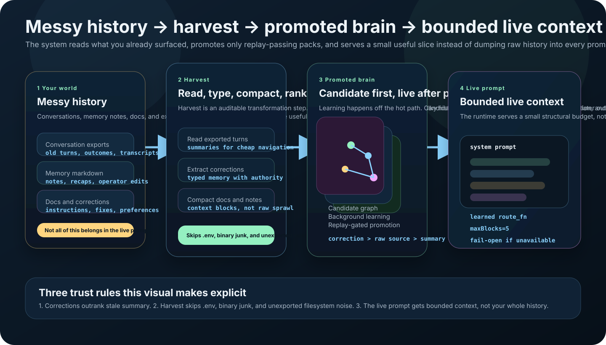

OpenClawBrain 0.4.26 is the current public release.
OpenClawBrain lifecycle
Learn from the past. Serve only what helps.
OpenClawBrain attaches to one OpenClaw home directory, learns from past work in the background, and serves a small useful memory slice at runtime. It does not dump raw history into the prompt or call a live LLM on every hop.
The result: your agent gets relevant context without bloated prompts. What follows is the mechanism.
One home directory
Replay-gated promotion
Bounded live context
No live-LLM hops
Where things stand
One release, one healthy reference host, one install path.
The exercised host shows aligned status, load proof, serving state, and route availability with nonzero truth.
The proof lane is hardened. Detailed status now exposes feedback and attrCover.
Install, restart, status, proof. Same commands for new installs and upgrades.
Three jobs
The lifecycle does three things. Everything else is detail.
Install on one home directory
The install command wires up the plugin, sets the memory layer root, and makes the host inspectable.
Keep learning off the live path
Past work becomes candidate memory. Replay gates it. Only promoted packs reach the live runtime.
Inject a small useful slice
The runtime injects bounded context plus a learned routing decision instead of stuffing raw history into every prompt.
What each layer does
Three layers, each with one job.
OpenClaw runtime layer
The plugin package carries the runtime behavior that OpenClaw loads as an extension.
openclawbrain install
The CLI handles install, status, proof, and the host-side setup that the plugin should not own.
routeFn
The runtime uses a learned route function to decide which bounded memory blocks to inject before prompt build.
Why the split: the runtime layer, CLI, and route function are separate by design. They should stay separate internally, but the install path should feel like one product.
The flow
History in, candidates through replay, promoted pack out, bounded serving.

One sentence
OpenClawBrain makes OpenClaw remember what matters without turning every answer into a history search or a live-LLM loop.